3.5 비정상 문제
시간이 흘러도 슬롯머신의 당첨 확률이 변하지 않는 기존의 정상(Stationary) 문제와 달리, 현실의 기계들은 시시각각 당첨 확률이 출렁이며 변합니다.
이를 비정상(Non-stationary) 환경 문제라고 부르죠.

지니가 지적하는 요동치는 확률 곡선 분포 그림 비유를 통해, 시시각각 급변하는 환경에서 에이전트가 어떻게 살아남아 보상을 최대화할 수 있는지 3.5장에서 깊이 있게 학습해봅시다!
⚖️ 정상 문제 vs 비정상 문제 비교
정상 문제와 비정상 문제의 차이를 직관적으로 비교한 그림입니다.

🐱 지니: “도로시, 어제까지 1등이었던 슬롯머신이 오늘은 꼴등으로 바뀌고, 꼴등이었던 머신이 갑자기 대박 머신으로 바뀐다면 에이전트는 어떻게 대처해야 할까?”
👧 도로시: “와! 예전의 오래된 기억만 믿고 있으면 안 되겠네요! 최근에 얻은 새로운 보상을 더 민감하게 관찰하고 판단해야겠어요!”
🐶 토토: “멍멍! (어제 사과가 열렸던 나무만 고집하면 굶을 수도 있다는 뜻이에요!)”
| 비교 항목 | 정상(Stationary) 환경 | 비정상(Non-stationary) 환경 |
|---|---|---|
| 보상 확률 분포 | 시간이 지나도 영구적으로 고정됨 | 시간에 따라 시시각각 동적으로 출렁이며 변화함 |
| 최적의 행동 | 한 번 찾은 1등 슬롯머신이 영원히 1등 | 1등 슬롯머신이 수시로 바뀌므로 지속적인 적응 필요 |
| 데이터 중요도 | 과거 데이터와 최신 데이터가 동등하게 중요 | 과거 데이터는 잊고 최신 데이터에 더 큰 가중치 부여 |
| 대표 알고리즘 | 단순 표본 평균(Sample Average: 1/n) | 고정 학습률 기반 지수 이동 평균(EMA: α) |
3.5.1 정상 문제와 비정상 문제의 정의
지금까지 다룬 밴디트 문제는 분류상 정상 문제stationary problem에 속합니다.
정상 문제란 보상의 확률 분포가 변하지 않는 문제입니다.
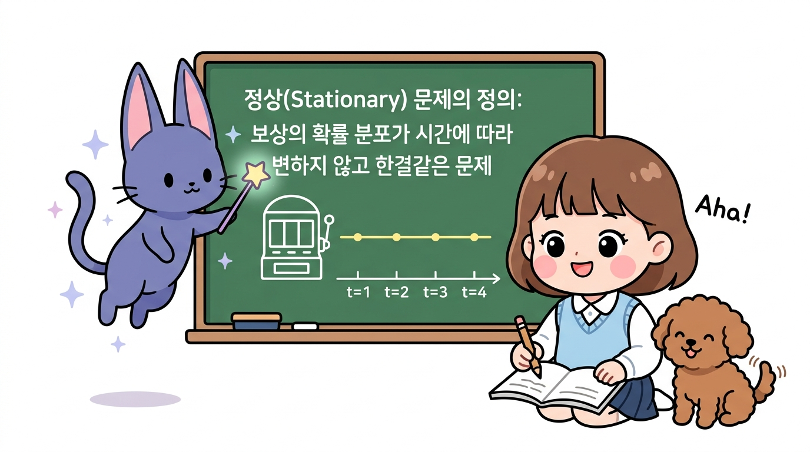
🐱 지니: “정상(Stationary, 靜常)이라는 단어는 ‘고요할 정(靜)’에 ‘항상 상(常)’을 써서 시간이 흘러도 상태가 고요하게 항상 일정하다는 뜻이야. 즉, 1번째 판이든 10,000번째 판이든 각 슬롯머신의 당첨 확률 분포는 절대로 변하지 않고 한결같이 유지된단다.”
👧 도로시: “아하! 슬롯머신 1번의 승률이 0.8이라면, 어제 당겨도 0.8, 오늘 당겨도 0.8, 1년 뒤에 당겨도 0.8이라는 뜻이군요! 그래서 과거의 플레이 기록이 쌓일수록 기계의 진짜 가치를 완벽하게 알아낼 수 있었던 거네요!”
🐶 토토: “멍멍! (동전 던지기에서 앞면이 나올 확률이 100번을 던지든 1,000번을 던지든 항상 50%로 똑같은 것과 같아요!)”
📌 정상(Stationary) 문제의 핵심 특징 3가지
- 시간 불변성 (Time-Invariant)
-
시간 t 가 흐르거나 에이전트가 어떤 행동을 취하더라도 보상 확률 P(Rt = r At = a) 는 영구히 고정됩니다.
-
- 모든 과거 데이터의 동등한 가치
- 1,000스텝 전에 얻은 보상과 방금 1스텝 전에 얻은 보상의 가치가 완전히 동일하며, 오래된 데이터라고 해서 버릴 이유가 전혀 없습니다.
- 큰 수의 법칙에 따른 완벽한 수렴
- 시도를 거듭하여 표본 수 n 이 무한히 커질수록, 표본 평균은 실제 보상 확률(참값)에 100% 수렴하게 됩니다.
3.5.1.1 정상 문제(Stationary Problem)의 개념과 구현
밴디트 문제 맥락에서 말해보면 슬롯머신에 설정된 승률(슬롯머신의 가치)은 줄곧 고정된 채였습니다.
슬롯머신의 속성은 한번 설정되면 에이전트가 플레이하는 동안 절대 변하지 않습니다.
앞 절까지 설명한 밴디트 문제가 정상 문제라는 사실은 Bandit 클래스의 다음 코드를 보면 알 수 있습니다.
class Bandit:
def __init__(self, arms=10):
# 1. 인스턴스 생성 시 10개 머신의 승률을 딱 한 번 무작위로 생성하여 고정
self.rates = np.random.rand(arms)
def play(self, arm):
# 2. 고정된 승률을 '읽기만' 할 뿐, self.rates 값을 절대 수정하지 않음
rate = self.rates[arm]
if rate > np.random.rand():
return 1
else:
return 0
이와 같이 self.rates는 객체 생성 시 초기화된 후 절대 변경되지 않습니다.
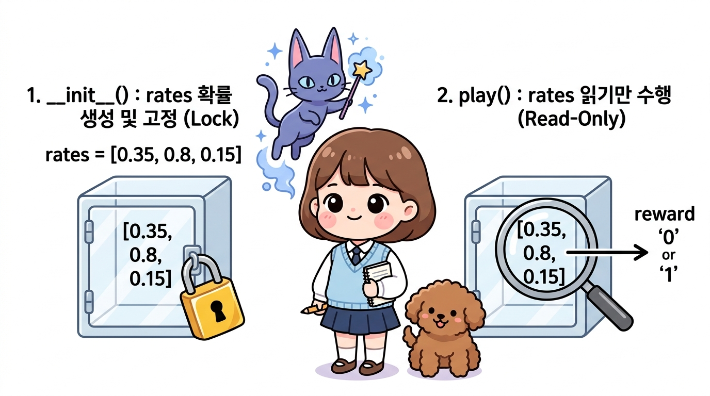
🐱 지니: “이 코드가 왜 ‘정상 문제’를 만드는지 파이썬 객체 지향 관점에서 두 가지 결정적인 이유를 정리해볼까?
- 객체 생성 시
__init__()매직 메서드 1회 실행:bandit = Bandit(10)으로 객체를 생성할 때, 파이썬의 매직 메서드인__init__()이 단 한 번만 실행되어self.rates에 10개 머신의 당첨 확률(rates)을 생성하고 자물쇠로 굳게 잠그듯 메모리에 고정(Lock)해 둔단다.play()메서드의 읽기 전용(Read-Only) 동작: 에이전트가 1,000번, 10,000번play(arm)을 호출하더라도,rate = self.rates[arm]문장은 고정된 승률 배열을 오직 읽기(Read-Only)만 할 뿐self.rates값을 수정하지 않는단다!”👧 도로시: “아하! 객체를 생성할 때 매직 메서드
__init__으로 딱 한 번만 확률rates가 정해져서 영구히 고정되고, 게임을 진행하는play()에서는 그 고정된rates를 돋보기로 읽기만 하니까 슬롯머신의 확률이 절대 변하지 않는 ‘정상 문제’가 되는 거군요!”🐶 토토: “멍멍! (보관함에 보관된 뼈다귀의 개수를 확인만 하고 아무도 손대지 않는 것과 같아요!)”
이 설정으로 Bandit 클래스를 정상 문제로 만들었습니다.
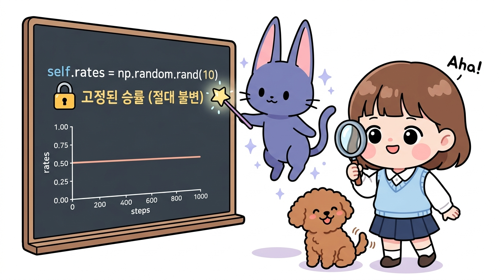
정상(stationary; 定常)은 ‘일정하여 늘 한결같다’라는 뜻입니다.
🔍 이전 절의 코드들이 ‘정상(Stationary) 문제’였던 3가지 핵심 이유
- 승률 배열
self.rates의 영구 불변성:__init__()에서 생성된 10개의 확률값은 1,000단계를 돌든 200번의 반복 실험을 돌든 프로그램이 끝날 때까지 단 한 번도 변경되지 않고 자물쇠로 잠겨 있듯 고정되어 있었습니다.
play()메서드의 읽기 전용(Read-only) 특성:- 에이전트가 레버를 당겨
play(arm)을 수천 번 호출해도, 승률을 조회만 할 뿐 승률 자체를 바꾸는 코드가 일절 없었습니다.
- 에이전트가 레버를 당겨
- 표본 평균(1/n) 갱신 공식과의 완벽한 궁합:
- 슬롯머신의 실제 승률이 영구 불변하기 때문에, 과거의 모든 보상을 공평하게 1/n로 누적하여 평균 내는 표본 평균 방식이 대수의 법칙에 따라 진짜 참값(승률)으로 완벽하게 수렴할 수 있었습니다.
👧 도로시: “아하! 우리가 3.4절에서 만들었던
Bandit클래스는self.rates를 생성자에서 딱 한 번 만들고 자물쇠로 굳게 잠가두었기 때문에 ‘정상 문제’였던 거군요!”🐱 지니: “정답이야 도로시! 환경이 변하지 않고 늘 한결같다면, 과거의 모든 데이터를 소중히 모아 1/n로 평균 내는 것이 가장 지혜로운 전략이란다!”
🐶 토토: “멍멍! (숨겨진 보물 상자의 위치가 절대 바뀌지 않는 평화로운 보물섬이었어요!)”
3.5.1.2 비정상 문제(Non-stationary Problem)의 개념과 구현
그렇다면 self.rates가 플레이할 때마다 달라지면 어떻게 될까요?
다음 코드를 살펴봅시다.
소스 코드: non_stationary.py
class NonStatBandit:
def __init__(self, arms=10):
self.arms = arms
self.rates = np.random.rand(arms)
def play(self, arm):
rate = self.rates[arm]
# 핵심 변경점: 레버를 당길 때마다 10개 머신 전체 승률에 작은 무작위 노이즈 추가
self.rates += 0.1 * np.random.randn(self.arms)
if rate > np.random.rand():
return 1
else:
return 0
NonStatBandit 클래스는 Bandit 클래스에 코드를 한 줄 추가하여 플레이할 때마다 self.rates에 작은 노이즈를 추가하도록 했습니다.
💡 참고로
np.random.randn()은 평균 0, 표준편차 1의 정규분포에서 무작위 수를 생성합니다. 여기에0.1을 곱해 매 스텝마다 슬롯머신의 승률이 조금씩 출렁이도록 만듭니다.
1️⃣ 코드 동작 메커니즘: 매 스텝 승률에 노이즈가 더해지는 원리
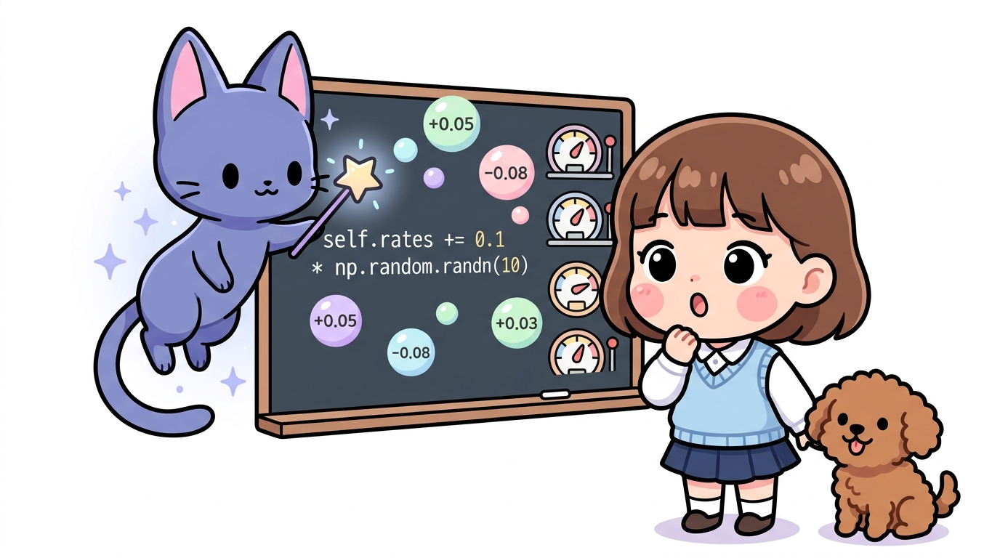
NonStatBandit의 핵심은 play() 메서드 안에서 실행되는 self.rates += 0.1 * np.random.randn(self.arms) 단 한 줄에 있습니다.
- 전체 슬롯머신의 동시 변동:
- 에이전트가 특정 슬롯머신(예: 3번 머신)을 하나만 선택해 당기더라도, 10대 슬롯머신 전체(
self.arms)의 승률 배열에 각각 독립적인 미세 난수(노이즈)가 더해집니다.
- 에이전트가 특정 슬롯머신(예: 3번 머신)을 하나만 선택해 당기더라도, 10대 슬롯머신 전체(
- 랜덤 워크(Random Walk) 현상:
- 어떤 머신은 승률이
+0.05오르고, 어떤 머신은-0.08떨어지는 등 매 스텝마다 승률이 주가나 날씨처럼 끊임없이 출렁이며 이동합니다.
- 어떤 머신은 승률이
👧 도로시: “와!
self.rates에+=연산자로 정규분포 난수를 계속 더해주니까, 슬롯머신의 승률 게이지 바늘이 살아 움직이는 생물처럼 시시각각 위아래로 흔들리네요!”🐱 지니: “맞아 도로시! 바로 이 한 줄의 코드가 정적인 슬롯머신을 ‘살아 숨 쉬며 급변하는 현실 세계의 환경’으로 탈바꿈시키는 마법의 열쇠란다!”
2️⃣ 비정상 환경의 핵심 위기: 1등 머신의 실시간 역전 현상
이 코드의 효과로 플레이할 때마다 슬롯머신의 가치(승률)가 달라집니다.
이처럼 보상의 확률 분포가 변하도록 설정된 문제를 비정상 문제non-stationary problem라고 합니다.
비정상 문제 환경에서는 다음과 같은 치명적인 변화가 발생합니다.
- 1등 머신의 잦은 교체 (Rank Shifting):
- 100번째 스텝에서는 머신 A가 승률 85%로 1등이었지만, 500번째 스텝에서는 승률이 떨어져 꼴등이 되고 머신 B가 승률 90%로 대역전 1등이 될 수 있습니다.
- 표본 평균 에이전트의 치명적 함정:
- 만약 에이전트가 3.4절에서 배운 단순 표본 평균(1/n) 방식만 고집한다면, 과거 머신 A가 대박을 냈던 오랜 기억(높은 Q값)에 눈이 멀어 이미 꼴등으로 추락한 머신 A의 레버만 바보처럼 계속 당기게 됩니다.
- 새로운 적응 전략의 필요성:
- 따라서 비정상 세상에서는 “오래된 옛날 기억은 과감히 잊어버리고, 가장 최근에 획득한 따끈따끈한 보상에 더 높은 가중치를 두는 새로운 가치 갱신 전략“이 반드시 필요합니다!
🐶 토토: “멍멍! (어제 1등이었던 가게만 고집하다간 오늘 맛없는 음식을 먹게 돼요! 최신 맛집 트렌드를 재빠르게 반영해야 해요!)”
이와 같은 비정상 문제는 어떻게 풀어야 하는지 이제부터 알아보겠습니다.
3.5.2 비정상 문제 해결을 위한 이론적 접근
먼저 복습부터 하겠습니다.
앞 절에서는 슬롯머신의 가치를 추정하기 위해 표본 평균을 계산했습니다.
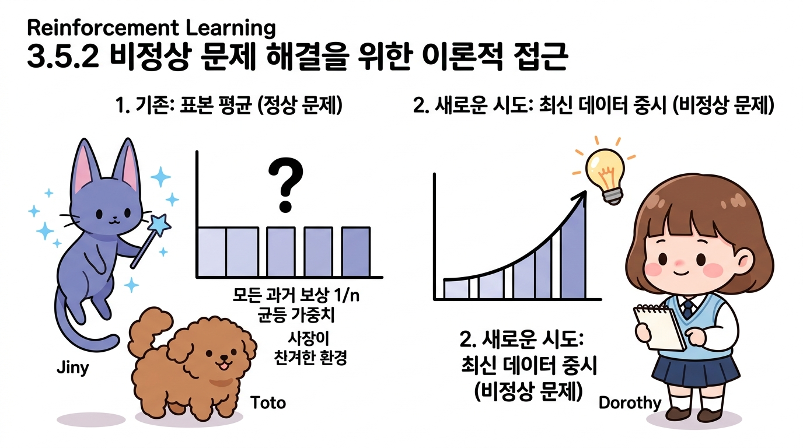
🐱 지니: “도로시, 승률이 영구히 고정되어 있던 ‘정상 문제’에서는 과거의 모든 경험을 똑같이 1/n 로 공평하게 모으는 표본 평균이 최고의 무기였어. 하지만 승률이 시시각각 출렁이는 ‘비정상 문제’에서는 어떻게 해야 할까?”
👧 도로시: “환경이 계속 변하고 있으니 과거의 낡은 보상에 얽매이지 않고, 최근에 얻은 새로운 보상에 더 큰 힘(가중치)을 실어주는 완전히 새로운 시도가 필요해요!”
🐶 토토: “멍멍! (어제 찾았던 보물 지도보다 방금 맡은 신선한 냄새를 따라가야 보상을 얻을 수 있어요!)”
💡 왜 비정상 문제에서는 새로운 접근 방식이 필요할까요?
- 정상 문제 (표본 평균 방식): 참값(승률)이 변하지 않으므로, 과거 데이터와 최신 데이터를 1/n 로 똑같이 취급하여 평균을 낼수록 진짜 가치에 완벽히 수렴합니다.
- 비정상 문제 (새로운 가중치 전략 필요): 참값(승률)이 계속 요동치므로, 먼 과거의 낡은 데이터는 점차 잊고 가장 최근에 얻은 보상에 높은 가중치를 주는 지수적 갱신 방식이 필수적입니다.
3.5.2.1 표본 평균 방식의 한계와 고정 가중치
실제 얻은 보상을 R1, R2, …, Rn이라 하면 표본 평균은 다음 식으로 표현됩니다.
\[\begin{aligned} Q_n &= \frac{R_1 + R_2 + \dots + R_n}{n} \\ &= \frac{1}{n} R_1 + \frac{1}{n} R_2 + \dots + \frac{1}{n} R_n \end{aligned}\]이 식에서처럼 표본 평균은 획득한 보상의 평균으로 구할 수 있습니다.
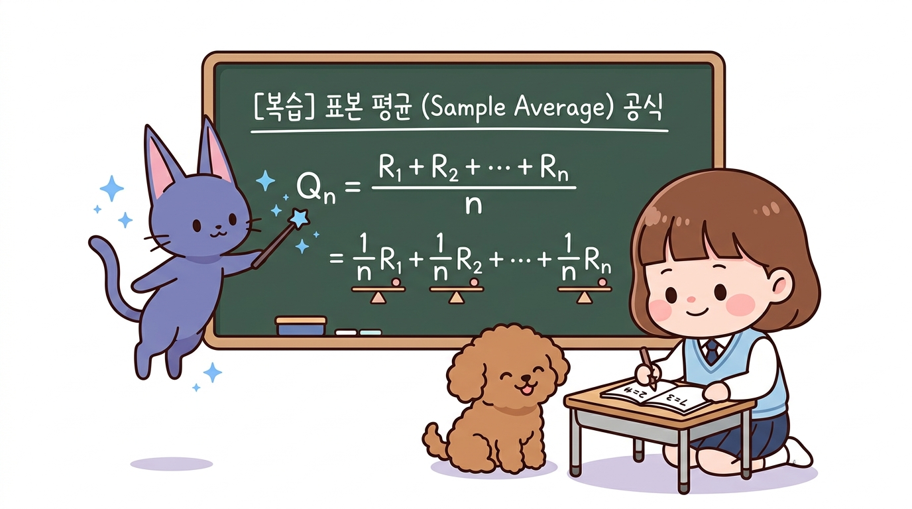
🐱 지니: “우리가 3.2절부터 3.4절까지 줄곧 사용해 온 표본 평균(Sample Average) 공식을 다시 한 번 복습해볼까? 에이전트가 슬롯머신을 당겨 얻은 모든 보상들을 총합한 뒤, 플레이한 횟수 n 으로 나누는 가장 기초적이고 직관적인 가치 추정 방식이란다.”
👧 도로시: “아하! 식을 오른쪽처럼 곱셈 형태로 풀어서 보면, 첫 번째 보상 R1부터 마지막 Rn까지 모든 보상 앞에 똑같이 1/n 이라는 가중치가 곱해져 있네요! 즉, 5번 플레이했다면 모든 과거 보상이 공평하게 1/5(20%)씩 지분을 나누어 갖는 셈이에요!”
🐶 토토: “멍멍! (과거의 모든 뼈다귀 조각이 저울 위에서 똑같은 무게 1/n 로 균형을 이루고 있어요!)”
📊 1. 모든 과거 보상에 부여되는 ‘1/n 균등 가중치’
여기서 주목할 점은 모든 보상 앞에 1/n이 붙어 있다는 것입니다.
이 1/n을 각 보상에 대한 ‘가중치’로 볼 수 있습니다.
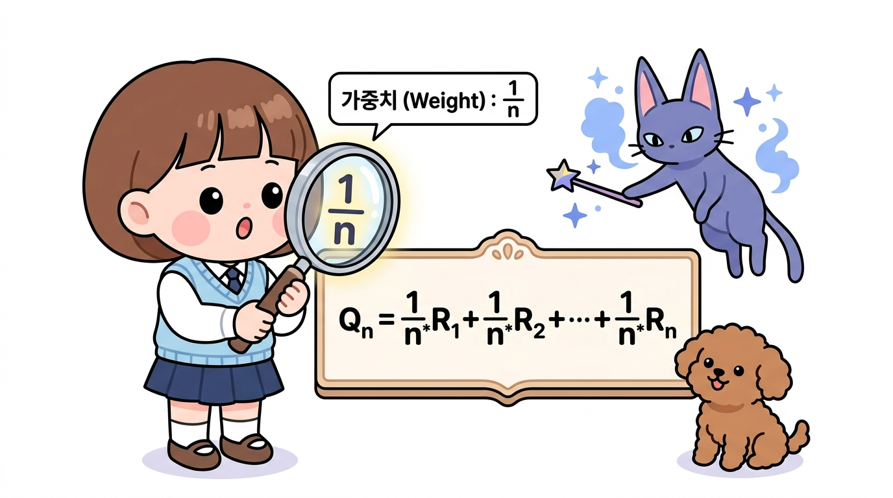
👧 도로시: “(돋보기로 수식을 유심히 들여다보며) 지니님! 수식을 자세히 보니 정말로 R1부터 Rn까지 모든 보상 앞에 똑같이 1/n 이라는 분수가 찰싹 달라붙어 있어요! 이 1/n 이 바로 각 보상의 중요도를 결정하는 가중치(Weight)라는 거군요!”
🐱 지니: “맞아 도로시! 가중치란 해당 데이터가 전체 계산 결과에 얼마만큼의 비중(영향력)을 미치는가를 뜻한단다. 모든 보상 앞에 똑같은 1/n 이 붙어 있다는 것은, 가장 처음 얻은 보상이든 방금 얻은 최신 보상이든 차별 없이 완전히 동등한 자격으로 평가받고 있다는 증거야!”
🐶 토토: “멍멍! (모든 뼈다귀 조각 앞에 똑같은 크기의 이름표 1/n 이 붙어 있는 것과 같아요!)”
여기서 “플레이 횟수 n이 늘어날수록 1/n의 크기는 1/2 → 1/3 → 1/4 → … 형태로 점점 줄어들지 않나?”라는 의문이 생길 수 있습니다.
실제로 플레이 횟수가 늘어남에 따라 개별 보상에 할당되는 가중치 1/n의 크기는 줄어듭니다.
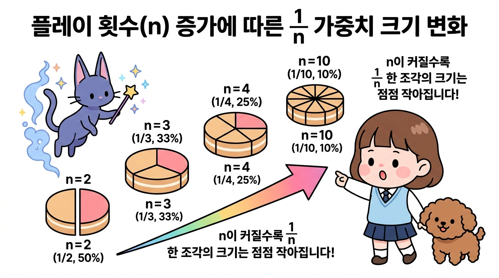
👧 도로시: “케이크 1판(총 가중치 100%)을 나누어 먹는 사람 수(n)가 늘어나는 것과 똑같네요!
- n = 2일 때: 1조각 = 1/2 (50%)
- n = 3일 때: 1조각 = 1/3 (약 33.3%)
- n = 4일 때: 1조각 = 1/4 (25%)
- n = 10일 때: 1조각 = 1/10 (10%)
- n = 1,000일 때: 1조각 = 1/1000 (0.1%)
플레이 횟수 n 이 쌓일수록 각 보상 하나하나가 전체 평균에 미치는 영향력(1/n)은 점점 더 작고 얇아져요!”
🐱 지니: “정답이야 도로시! 게임을 1,000번 플레이했다면 방금 얻은 최신 보상조차 전체 평균에 고작 0.1%의 힘밖에 실어주지 못하게 된단다.”
🐶 토토: “멍멍! (나눠 먹을 친구가 많아질수록 뼈다귀 한 조각의 크기가 작아지는 원리에요!)”
하지만 어느 한 시점 n을 기준으로 보면, 과거에 받았던 모든 보상들(R1, R2, …, Rn)이 가지는 가중치는 모두 1/n로 균등합니다.
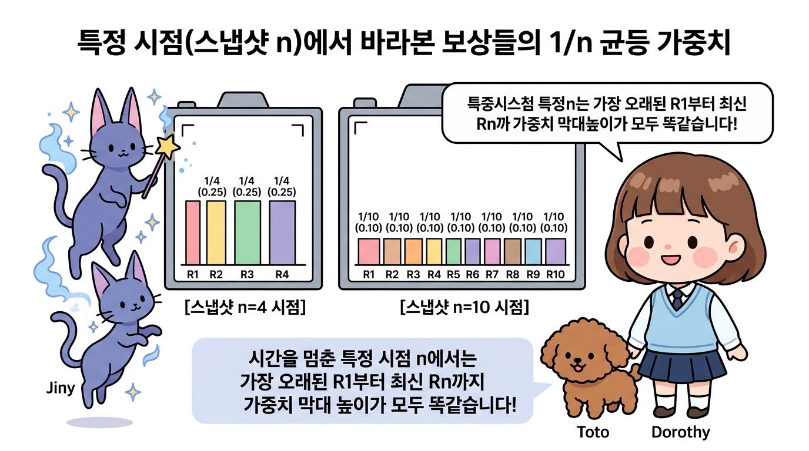
🐱 지니: “도로시, ‘시간의 흐름’과 ‘특정 시점의 정지 화면(스냅샷)’을 구분해서 생각하면 아주 명쾌해진단다!
- 시간이 흐르는 동안 (동적 관점): 플레이 횟수 n 이 늘어날수록 개별 가중치(1/n)의 크기는 0.5 → 0.33 → 0.25 → 0.1 처럼 점점 줄어들어.
- 특정 시점 n 에서 멈췄을 때 (스냅샷 관점): 게임을 4번째(n=4) 플레이한 그 순간에 서서 계산식을 보면, 1번째 보상(R1)부터 4번째 보상(R4)까지 4개의 보상 모두가 정확히 똑같이 1/4(0.25, 25%)의 막대 높이를 가지게 되지!”
👧 도로시: “아하! 동영상을 일시 정지(Pause)하고 그 시점의 계산식을 살펴보는 거군요! n=10 시점에서는 10개 보상 모두가 1/10(0.1)로 똑같고, n=1,000 시점에서는 1,000개 보상 모두가 1/1000(0.001)로 완전히 똑같은 높이의 평평한 수평선을 이루네요!”
🐶 토토: “멍멍! (어느 순간 사진을 찰칵 찍어봐도, 그 사진 속 모든 뼈다귀들은 똑같은 크기로 나눠져 있어요!)”
그림으로는 [그림 3-25]처럼 나타낼 수 있습니다.
그림 3-25 각 보상에 대한 가중치(표본 평균의 경우)

[그림 3-25]는 특정 시점 n(예를 들어 n=2)을 기준으로 가중치를 나타낸 하나의 예시입니다.
그래프 세로축의 0.5는 단지 이해를 돕기 위해 임의의 작은 n 값을 설정한 예시값일 뿐입니다.
중요한 사실은 그림과 같이 시점 n이 고정되어 있을 때 모든 보상에 똑같은 가중치가 부여된다는 점입니다.
새로 얻은 보상이든 오래전에 얻은 보상이든 모두 동등하게 취급한다는 뜻입니다. 만약 n=10이 되면 모든 막대의 높이가 일제히 0.1로 낮아지지만, 여전히 모든 막대의 높이는 서로 동일합니다.
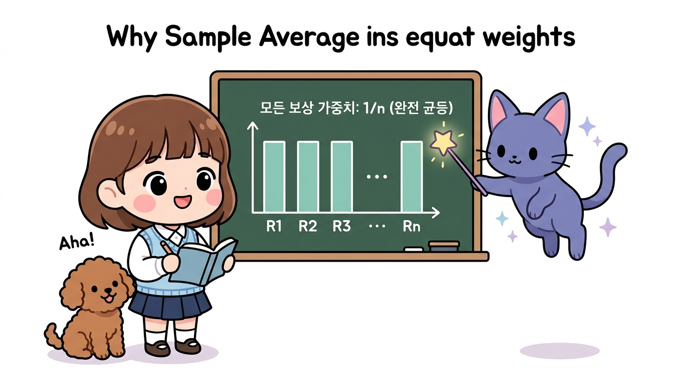
👧 도로시: “결국 표본 평균은 특정 시점 n 에서 가장 오래된 옛날 기억(R1)이나 방금 얻은 최신 기억(Rn)이나 아무런 차별 없이 완벽하게 똑같은 1/n 의 비중으로 대우한다는 뜻이군요!”
⚠️ 2. 비정상 환경에서 1/n 방식의 치명적 한계: ‘과거의 족쇄와 둔감화’
그런데 이 가중치는 비정상 문제에는 적합하지 않습니다.
비정상 문제에서는 시간이 흐르면 환경(슬롯머신)이 변하기 때문에 과거 데이터(보상)의 중요도는 점점 낮아져야 합니다.
반대로 새로 얻은 보상의 가중치는 점점 커져야 하겠죠.
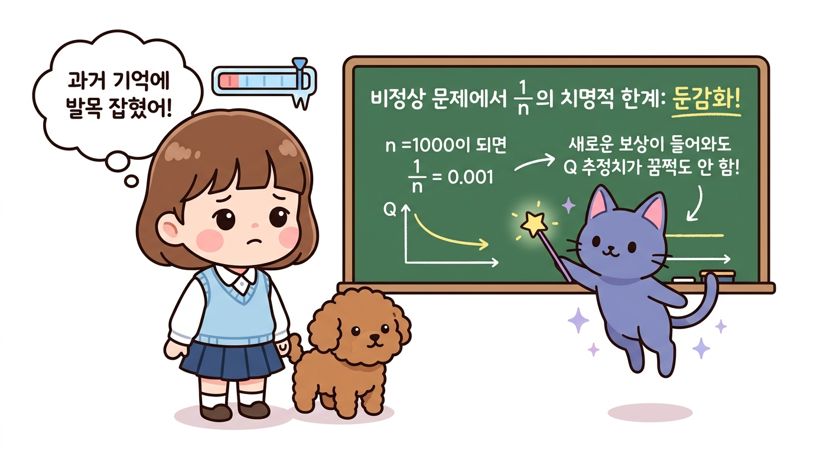
표본 평균을 효율적으로 구해야 하는 이유는 앞에서 설명했습니다.
다음의 갱신식을 활용하면 표본 평균을 효율적으로 구할 수 있습니다.
\[Q_n = Q_{n-1} + \frac{1}{n}(R_n - Q_{n-1})\][식 3.5]
[식 3.5]와 같이 행동 가치 추정치 Qn을 증분 방식(순차적)으로 갱신할 수 있습니다.
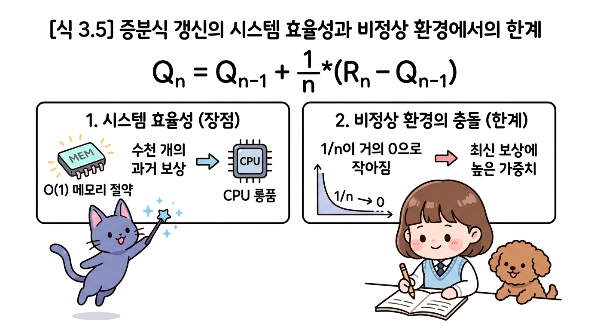
⚙️ 1. [식 3.5]가 제공했던 뛰어난 시스템 효율성 (정상 문제에서의 성공)
- 과거 데이터 무저장 (O(1) 메모리 절약):
- 3.3절에서 유도했던 증분 공식은 과거 수천, 수만 번의 보상 데이터(R1, R2, …)를 일일이 배열에 누적 보관할 필요가 없습니다.
- 오직 직전 가치 추정치 Qn-1 하나와 현재 보상 Rn만 메모리에 유지하면 되므로, 시스템의 메모리 부하를 O(1)로 획기적으로 절감합니다.
- CPU 연산 부하 최소화:
- 매 스텝마다 모든 과거 데이터를 처음부터 전수 합산하여 나누는 비효율 없이, 오차 (Rn - Qn-1)에 1/n을 곱해 더하는 가벼운 사칙연산만으로 표본 평균을 즉각적이고 효과적으로 계산할 수 있었습니다.
⚠️ 2. 비정상 문제에서 발생하는 치명적 모순: ‘가중치 차등 부여 불가’
- 표본 평균(1/n 균등 가중치) 태생의 한계:
- [식 3.5]의 목적은 어디까지나 “모든 과거 보상을 똑같이 1/n 로 나누어 갖는 표본 평균”을 빠르고 가볍게 계산하는 것입니다.
- 최신 보상 가중치 부여 실패:
- 비정상 환경에서는 오래된 보상은 잊고 최근에 얻은 새로운 보상에 더 큰 가중치를 부여해야 합니다.
- 하지만 [식 3.5]는 플레이 횟수 n 이 1,000번, 10,000번으로 커질수록 최신 보상의 반영 비율인 1/n 이 0으로 소멸(1/n ➔ 0)해버려 최신 보상의 변화를 전혀 받아들이지 못하고 마비(동결)됩니다.
👧 도로시: “아하! 3.3절에서 배운 [식 3.5]는 과거 데이터를 일일이 저장하지 않아 시스템 부하를 크게 줄여주는 훌륭한 계산식이었지만, 그 본질이 ‘모든 보상을 똑같이 1/n 로 취급하는 표본 평균’에 묶여 있었기 때문에 최신 데이터에 가중치를 주어야 하는 비정상 문제에는 맞지 않았던 거군요!”
🐱 지니: “정확하게 짚었어 도로시! 가볍고 효율적인 ‘증분 갱신 프레임워크’는 그대로 유지하되, 0으로 줄어드는 1/n 가중치 자리만 최신 보상을 중시하는 새로운 도구로 바꿔 끼워야 한단다!”
🐶 토토: “멍멍! (가벼운 배낭 구조는 그대로 쓰고, 배낭 속 낡은 1/n 지도만 최신 나침반으로 바꾸면 돼요!)”
3.5.2.2 고정값 α 기반 증분 갱신식 제안
이제부터 본론입니다. 수식을 좀더 개선해 보도록 합니다.
[식 3.5]에서 가중치인 1/n을 α라는 고정값으로 바꿉니다.
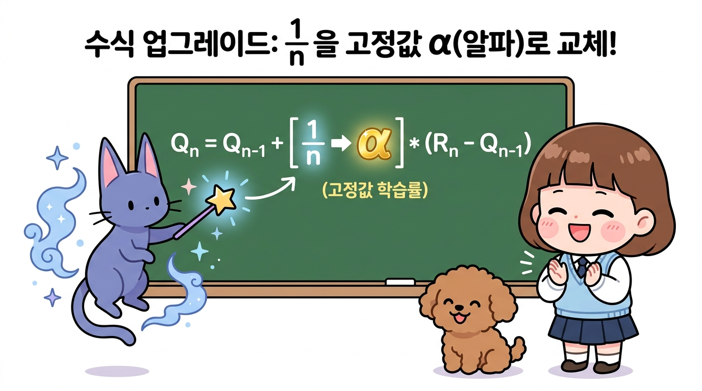
🐱 지니: “도로시, 기존 증분 갱신의 가볍고 빠른 장점은 그대로 살리면서, 0으로 줄어들던 1/n 자리에 언제나 일정한 고정값 α(알파, 학습률)를 쏙 끼워 넣는 마법이야! 이렇게 하면 게임을 1,000번, 10,000번 플레이한 뒤에도 에이전트가 최신 보상의 변화를 둔감하게 놓치지 않고 민첩하게 반응할 수 있단다.”
👧 도로시: “와! 1/n 대신 고정 상수 α를 사용하니까, 플레이 횟수 n 이 아무리 많이 쌓여도 귀를 닫지 않고 언제나 최신 보상에 일정한 감도로 귀를 쫑긋 세우게 되는군요!”
🐶 토토: “멍멍! (시간이 지나도 녹슬지 않는 황금 나침반 α를 장착했어요!)”
여기서 α는 시행 횟수 n이 아무리 늘어나도 변하지 않고 항상 일정하게 유지되는 고정된 상수(학습률)입니다.
(0 < α < 1)
수식으로는 다음과 같습니다.
\[Q_n = Q_{n-1} + \alpha(R_n - Q_{n-1})\][식 3.6]
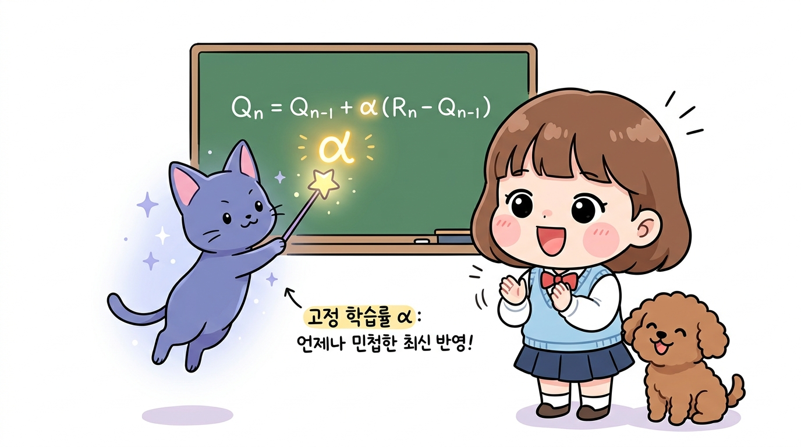
[식 3.6]을 적용해 행동 가치 추정치를 갱신하면 각 보상의 가중치는 어떻게 될까요?
답부터 보여드리면 [그림 3-26]처럼 됩니다.
그림 3-26 각 보상에 대한 가중치(고정값 α로 갱신한 경우)

고정값 α로 갱신하면 [그림 3-26]과 같이 오래전에 받은 보상일수록 가중치가 기하급수적으로 감쇠합니다.
여기서 그래프의 가로축은 시간의 순서대로 왼쪽이 가장 오래전에 얻은 보상(과거), 오른쪽이 가장 최근에 얻은 보상(현재)을 나타냅니다.
따라서 과거로 거슬러 올라갈수록(왼쪽으로 갈수록) (1 - α)가 계속해서 거듭 곱해지기 때문에 가중치 막대의 높이가 0에 가깝게 작아집니다. 반대로 최근에 가까워질수록(오른쪽으로 갈수록) 감쇠가 덜 적용되어 막대 높이가 점점 커지며, 가장 최근인 현재 시점의 보상 Rn에서 최대 가중치인 α를 갖게 됩니다.
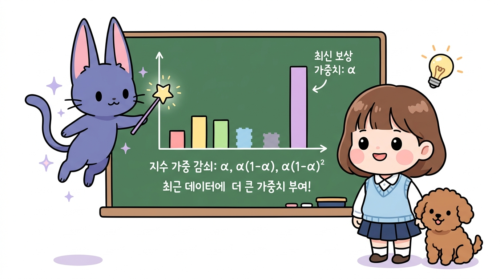
이처럼 시간의 흐름(오른쪽 방향)에 따라 가중치가 상승하는 형태를 띠게 되며, 오래된 과거의 데이터보다 최근의 새로운 데이터를 더 강하게 반영하여 비정상 문제에 대응할 수 있게 해줍니다.
3.5.2.3 지수 이동 평균(EMA) 수식 유도
그런데 [식 3.6]처럼 고정된 값 α로 갱신하면 [그림 3-26]와 같은 기하급수적인 가중치가 만들어지는 이유는 무엇일까요?
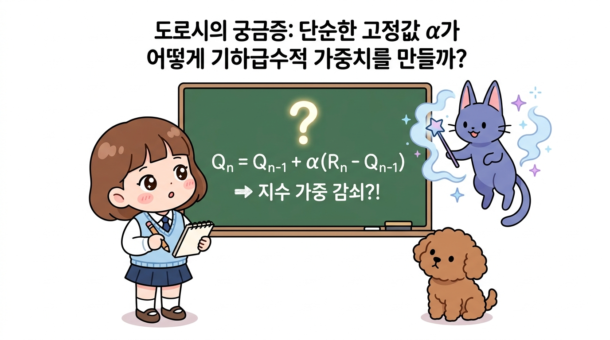
👧 도로시: “(고개를 갸우뚱하며) 지니님! 우리는 단순히 1/n 대신 고정된 상수 α 하나를 넣었을 뿐인데, 수식 어디에도 거듭제곱(지수) 기호가 안 보이잖아요? 그런데 왜 과거로 갈수록 가중치가 기하급수적으로 스르륵 줄어들고 최신 보상만 크게 살아남는 [그림 3-26] 같은 마법의 그래프가 나오는 건가요? 수식 속에 어떤 비밀이 숨겨져 있는 건가요?”
🐱 지니: “후후, 도로시의 호기심 가득한 관찰력이 정말 대단하구나! 겉보기에는 단순한 1차식 같지만, 과거의 Q 값들을 양파 껍질 벗기듯 하나씩 거슬러 올라가 대입해보면 놀라운 지수적 곱셈의 비밀이 펼쳐진단다! 지금부터 나와 함께 마법의 수식을 단계별로 풀어볼까?”
🐶 토토: “멍멍! (비밀의 수학 암호를 풀러 갈 시간이에요! 얼른 열어봐요!)”
수식으로 이유를 설명해보겠습니다.
먼저 식을 다음과 같이 전개합니다.
\[\begin{aligned} Q_n &= Q_{n-1} + \alpha(R_n - Q_{n-1}) \\ &= \alpha R_n + Q_{n-1} - \alpha Q_{n-1} \\ &= \alpha R_n + (1 - \alpha) Q_{n-1} \end{aligned}\][식 3.7]
Qn과 Qn-1의 관계가 명확해지도록 식을 변형했습니다.
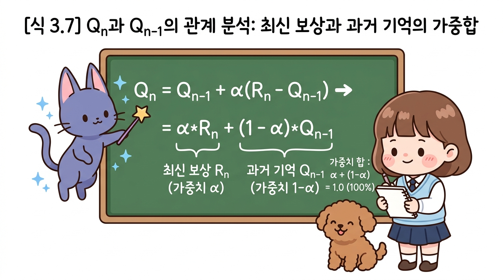
🔍 [식 3.7]이 명확하게 보여주는 핵심 관계 2가지
- 최신 보상(Rn)과 과거 기억(Qn-1)의 가중합 (Weighted Sum)
- 현재 시점의 가치 추정치 Qn은 방금 얻은 새로운 보상 Rn(가중치 α)과 이전까지 축적된 과거의 총체적 기억 Qn-1(가중치 1 - α)의 합으로 정확히 양분됩니다.
- 가중치의 합은 언제나 완벽한 1.0 (100%)
- 두 가중치를 더하면 α + (1 - α) = 1.0 이 되므로, 전체 가치 추정치의 총합 비중 100%를 최신 경험과 과거 기억이 나누어 갖는 가중 평균(내분점) 구조를 가집니다.
🐱 지니: “괄호를 풀어서 Qn-1끼리 묶어주니 수식의 숨겨진 의미가 한눈에 들어오지? 현재 가치 Qn은 새로운 최신 보상 Rn을 α만큼 받아들이고, 과거의 기억 Qn-1을 (1 - α)만큼 물려받는 아름다운 균형식이야!”
👧 도로시: “와! 만약 α = 0.1(10%)이라면, 방금 얻은 최신 보상을 10% 반영하고 이전까지의 경험을 90% 보존하면서 자연스럽게 가치를 갱신하는 거였군요!”
🐶 토토: “멍멍! (새로 주운 뼈다귀 10%와 보관함의 뼈다귀 90%를 황금 비율로 섞는 비법이에요!)”
다음 수식 개선 (n을 하나 뒤로 미루면)
이어서 [식 3.7]의 n을 하나 뒤로 미루면, 즉 n에 n - 1을 대입하면 다음 식을 얻을 수 있습니다.
\[Q_{n-1} = \alpha R_{n-1} + (1 - \alpha) Q_{n-2}\][식 3.8]
[식 3.8]은 Qn-1과 Qn-2의 관계를 보여줍니다.
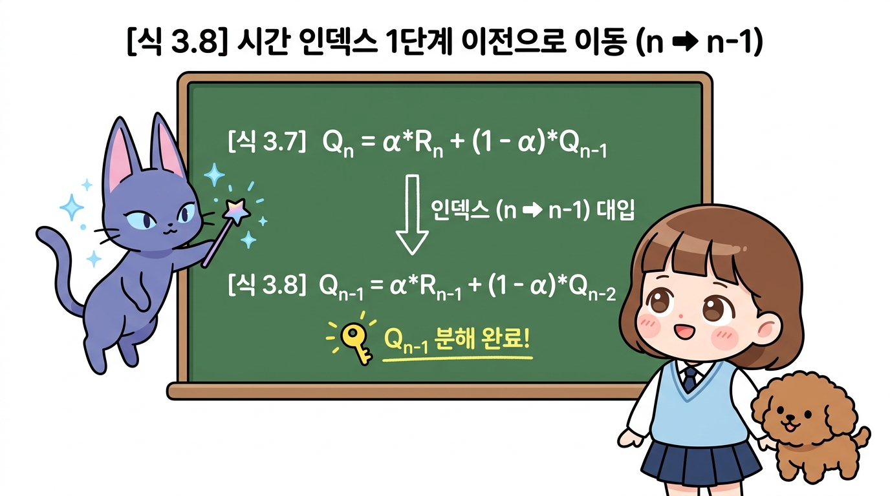
🐱 지니: “모든 시간 단계에는 똑같은 수학적 갱신 규칙이 적용된단다! [식 3.7]의 모든 n 을 (n - 1)로 한 단계 뒤로 물려주면, 직전 가치 Qn-1 속에 어떤 보상(Rn-1)과 더 이전 기억(Qn-2)이 숨어 있는지 명확하게 분해할 수 있어.”
👧 도로시: “와! 시간을 한 칸 뒤로 돌려서 Qn-1의 속을 들여다본 거군요! 이제 이 [식 3.8]을 원래의 [식 3.7] 속 Qn-1 자리에 쏙 대입하기만 하면 연쇄적으로 과거의 보상들이 줄줄이 모습을 드러내겠네요!”
🐶 토토: “멍멍! (러시아 인형 마트료시카의 첫 번째 뚜껑을 연 것과 같아요!)”
이제 [식 3.8]의 Qn-1을 [식 3.7]에 대입해보죠.
\[\begin{aligned} Q_n &= \alpha R_n + (1 - \alpha) Q_{n-1} & \text{--- [식 3.7]} \\ &= \alpha R_n + (1 - \alpha) \{ \alpha R_{n-1} + (1 - \alpha) Q_{n-2} \} & \text{--- [식 3.8]을 대입} \\ &= \alpha R_n + \alpha(1 - \alpha) R_{n-1} + (1 - \alpha)^2 Q_{n-2} \end{aligned}\][식 3.9]
💡 중괄호
{ }부분이 [식 3.8]을 [식 3.7]에 대입하여 전개한 부분입니다.
[식 3.9]를 보면 Rn의 가중치는 α이고, Rn-1의 가중치는 α(1 - α)가 됩니다.
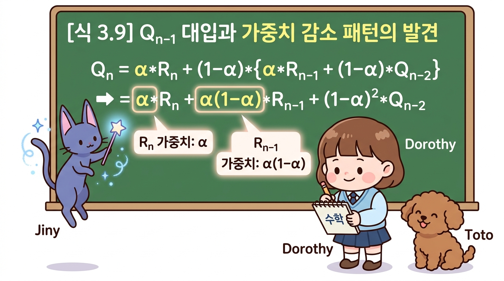
💡 [식 3.9]에서 발견한 지수 감쇠의 첫 번째 규칙
- 최신 보상(Rn)의 가중치: α
- 1단계 전 보상(Rn-1)의 가중치: α(1 - α)
- 가중치의 자연스러운 감소:
- 0 < α < 1 이므로 항상 (1 - α) < 1 입니다.
- 따라서 α(1 - α)는 α보다 항상 작아지며, 과거로 1스텝 물러설 때마다 가중치가 (1 - α)배만큼 감소합니다.
- 예를 들어 α = 0.1 이라면, 최신 보상 Rn은 10%(0.10)가 반영되지만 한 단계 전 보상 Rn-1은 9%(0.09)로 비중이 줄어듭니다!
🐱 지니: “도로시, 대입을 한 번 거쳤을 뿐인데 놀라운 규칙이 드러났지? 최신 보상 Rn은 온전한 α의 힘을 받지만, 과거 보상 Rn-1에는 (1 - α)가 한 번 더 곱해져서 비중이 살짝 줄어들었단다!”
👧 도로시: “와! 과거로 갈수록 (1 - α)가 곱해지면서 자연스럽게 오래된 기억의 힘이 옅어지는 원리군요! 그렇다면 계속해서 더 이전의 Q 값들을 대입하면 어떻게 될지 너무 기대돼요!”
🐶 토토: “멍멍! (어제 먹은 뼈다귀의 기억보다 방금 냄새 맡은 뼈다귀가 더 생생하게 느껴져요!)”
이어서 지금까지의 과정을 [식 3.9]의 Qn-2에 적용해보겠습니다.
\[Q_n = \alpha R_n + \alpha(1 - \alpha) R_{n-1} + \alpha(1 - \alpha)^2 R_{n-2} + (1 - \alpha)^3 Q_{n-3}\]이상의 전개를 n번 반복하면 다음 식이 만들어집니다.
\[Q_n = \alpha R_n + \alpha(1 - \alpha) R_{n-1} + \alpha(1 - \alpha)^2 R_{n-2} + \dots + \alpha(1 - \alpha)^{n-1} R_1 + (1 - \alpha)^n Q_0\][식 3.10]
[식 3.10]을 살펴보면 가중치가 다음과 같이 기하급수적으로 감소함을 알 수 있습니다.
- 최신 보상 Rn의 가중치: α
- 직전 보상 Rn-1의 가중치: α(1 - α)
- 2단계 전 보상 Rn-2의 가중치: α(1 - α)2
- 3단계 전 보상 Rn-3의 가중치: α(1 - α)3
- …
- 첫 번째 보상 R1의 가중치: α(1 - α)n-1
- 초깃값 Q0의 가중치: (1 - α)n
이처럼 지수적으로 감소하기 때문에 [식 3.10]의 계산을 지수 이동 평균exponential moving average, EMA 또는 지수 가중 이동 평균exponential weighted moving average이라고 합니다.
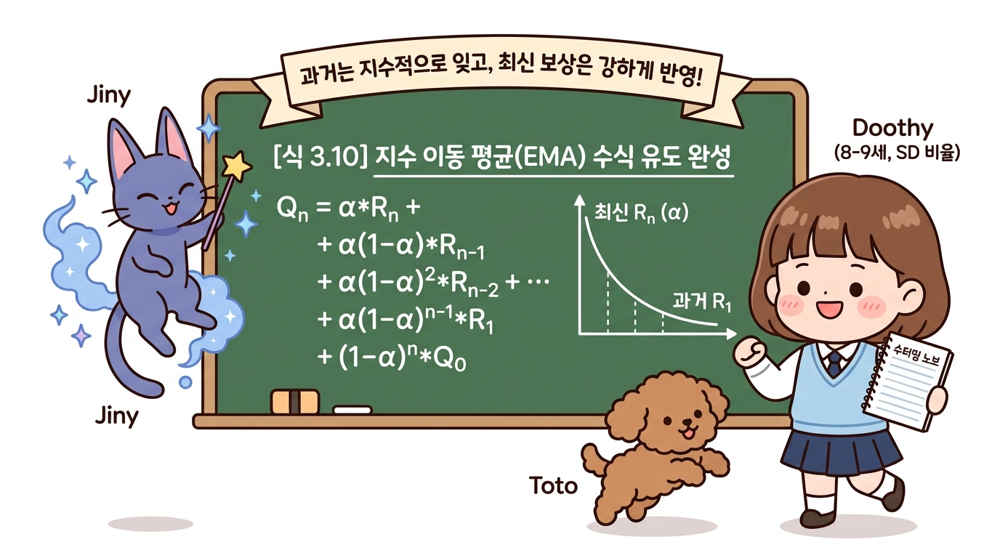
[식 3.10] 지수 이동 평균의 3가지 핵심 특징
1. 가중치의 합은 완벽하게 1.0 (정규 가중 평균)
모든 보상들의 가중치와 초깃값의 가중치를 모두 합하면 정확히 1이 됩니다.
\[\sum_{i=1}^n \alpha(1 - \alpha)^{n-i} + (1 - \alpha)^n = \alpha \frac{1 - (1 - \alpha)^n}{1 - (1 - \alpha)} + (1 - \alpha)^n = 1 - (1 - \alpha)^n + (1 - \alpha)^n = 1\]따라서 어떤 경우에도 왜곡 없이 완전한 ‘가중 평균’의 수학적 조건을 만족합니다.
2. 기하급수적 기억 감쇠 (Exponential Forgetting)
- 0 < α < 1 이므로, 공비 (1 - α) 역시 0보다 크고 1보다 작습니다.
- 따라서 스텝이 과거로 1단계씩 멀어질 때마다 가중치가 (1 - α) 배율로 줄어들어, 오래된 과거 보상의 영향력은 자연스럽게 0에 수렴하며 잊혀집니다.
3. 초경량 O(1) 연산과 메모리로 지수 가중치 구현
- 과거의 모든 보상 기록(R1, R2, …, Rn)을 리스트에 다 보관하고 지수 곱을 일일이 계산할 필요가 전혀 없습니다.
- 단지 매 시점 최신 보상 Rn과 이전 추정치 Qn-1 하나만 가지고 Qn = Qn-1 + α(Rn - Qn-1)을 계산하는 것만으로, 이 정교한 지수 가중 이동 평균이 매 스텝 완벽히 달성됩니다!
🐱 지니: “도로시, 드디어 [식 3.10]의 완전한 모습을 만났구나! 단지 갱신 수식에서 1/n을 고정값 α로 바꿨을 뿐인데, 매 스텝마다 최신 보상은 α만큼 강하게 새기고 오래된 과거 보상들은 (1 - α)씩 부드럽게 지수 감쇠시켜 잊어버리는 놀라운 마법이 완성된 거야!”
👧 도로시: “와! 과거의 모든 보상 데이터를 메모리에 다 쌓아둘 필요도 없이, 단 하나의 수식 Qn = Qn-1 + α(Rn - Qn-1)으로 이 멋진 지수 감쇠 곡선이 자동으로 계산된다니 정말 경이로워요! 이제 슬롯머신의 확률이 중간에 확 바뀌어도 최신 보상을 빠르게 따라잡을 수 있겠어요!”
🐶 토토: “멍멍! (오래된 기억은 스르륵 지우고, 방금 찾은 맛있는 간식 냄새에 집중하는 똑똑한 탐색법이에요!)”
3.5.2.4 초깃값 설정에 따른 학습 편향(Bias) 영향
[식 3.10]에서 주의할 점은 Qn을 구하는 데 Q0의 값이 사용되었다는 것입니다.
Q0은 행동 가치의 초깃값으로, 우리가 설정하는 값입니다. 따라서 Qn의 값은 우리가 설정한 초깃값에 영향을 받습니다.
다시 말해 우리가 설정한 값에 따라 학습 결과에 편향bias이 생깁니다. 반면 표본 평균의 경우 이러한 편향이 생기지 않습니다. 표본 평균은 첫 번째 보상을 받으면 사용자가 부여한 초깃값은 ‘사라진다’고 할 수 있습니다.
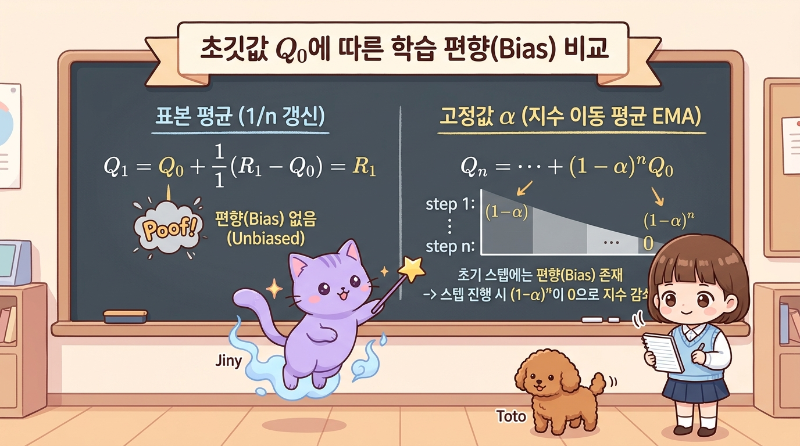
표본 평균 vs 고정값 α (EMA)의 초깃값 영향 비교
| 구분 | 표본 평균 (1/n 갱신) | 고정값 α (지수 이동 평균, EMA) |
|---|---|---|
| 1단계 갱신 결과 | Q1 = Q0 + 1/1(R1 - Q0) = R1 | Q1 = αR1 + (1 - α)Q0 |
| 초깃값 Q0 영향력 | 첫 번째 보상 R1을 받는 즉시 100% 소멸 (편향 없음) | (1 - α)n 비율로 서서히 지수 감쇠 |
| 초기 스텝의 편향(Bias) | 전혀 없음 (초깃값과 무관하게 첫 보상으로 직행) | 초기 몇 스텝 동안 초깃값 설정에 따른 편향 잔존 |
| 시간 경과 후 (n 증가) | 과거의 모든 데이터가 균등하게 누적 | (1 - α)n → 0 이 되어 편향 소멸 및 최신 트렌드 반영 |
🐱 지니: “고정값 α 방식에서는 초기 가치 Q0의 영향력이 (1 - α)n의 비율로 서서히 지수 감쇠하면서 잊혀지지만, 초반 몇 번의 스텝 동안에는 초깃값 설정에 따른 편향(Bias)이 남아있단다!”
👧 도로시: “하지만 단계 수 n이 커질수록 (1 - α)n은 0에 가까워지니까, 시간이 흐르면 결국 실제 보상들의 최신 트렌드만 정확하게 남게 되는군요!”
🐶 토토: “멍멍! (처음엔 주인이 알려준 시작 냄새(초깃값)를 기억하지만, 산책을 오래 할수록 방금 맡은 신선한 간식 냄새를 따라가는 것과 같아요!)”
3.5.3 비정상 문제 해결을 위한 에이전트 구현 및 평가
비정상인 밴디트 문제를 실제로 풀어보죠.
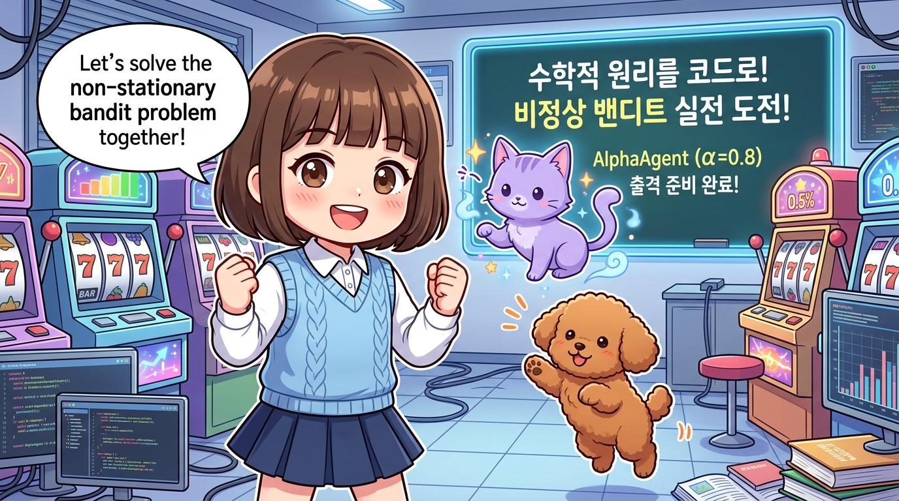
👧 도로시: “지니! 우리가 유도한 지수 이동 평균(EMA)의 수학적 원리가 정말 든든해요. 이제 고정값 α를 사용하는 똑똑한
AlphaAgent를 파이썬 코드로 직접 만들어서, 확률이 시시각각 출렁이는 비정상 슬롯머신 문제를 정복해 봐요!”🐱 지니: “좋은 자신감이야, 도로시! 기존
Agent클래스에서 가치 갱신 공식의 스텝 크기만 1/n에서 고정값 α로 바꾸면 강력한AlphaAgent가 완성된단다. 바로 코드로 확인해 볼까?”🐶 토토: “멍멍! (출격 준비 완료! 움직이는 타깃을 향해 출발해요!)”
3.5.3.1 AlphaAgent 클래스 구현
이를 위해 해야 할 일은 추정치를 고정값 α로 갱신하는 것뿐입니다.
값이 고정된 변수 alpha로 추정치를 갱신하는 에이전트를 AlphaAgent 클래스로 다음과 같이 구현합니다.
소스 코드: non_stationary.py
class AlphaAgent:
def __init__(self, epsilon, alpha, actions=10):
self.epsilon = epsilon
self.Qs = np.zeros(actions)
self.alpha = alpha # 고정값 α
def update(self, action, reward):
# α로 갱신: Q_n = Q_{n-1} + α * (R_n - Q_{n-1})
self.Qs[action] += (reward - self.Qs[action]) * self.alpha
def get_action(self):
if np.random.rand() < self.epsilon:
return np.random.randint(0, len(self.Qs))
return np.argmax(self.Qs)
코드는 매우 간단합니다.
추정치를 계산할 때 (1/n로 나누는 대신) self.alpha를 곱하면 됩니다.
3.4.2절의 Agent 클래스와 비교해보세요.
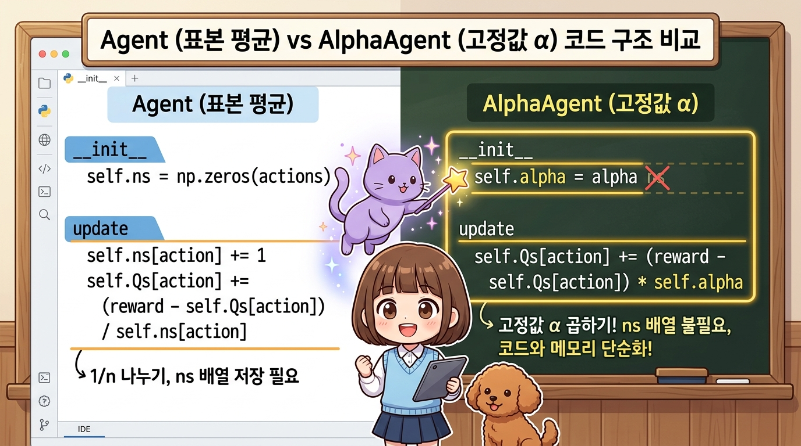
💡 Agent vs AlphaAgent 코드 구조의 2가지 핵심 차이점
self.ns(행동 횟수 카운팅 배열)의 완전한 제거:- 기존
Agent는 1/n을 계산하기 위해 각 머신을 몇 번 당겼는지self.ns = np.zeros(actions)로 일일이 기록하고 갱신해야 했습니다. - 반면
AlphaAgent는 항상 고정된self.alpha를 사용하므로, 방문 횟수를 카운트할 필요가 전혀 없어 메모리와 코드가 훨씬 가볍고 단순해졌습니다!
- 기존
- 가치 갱신(
update) 연산의 직관적 변화:Agent:self.Qs[action] += (reward - self.Qs[action]) / self.ns[action]AlphaAgent:self.Qs[action] += (reward - self.Qs[action]) * self.alpha- 나눗셈(/) 연산 대신 고정값 곱셈()을 수행하여 연산 효율을 높이고, 최신 보상을 언제나 일정한 비율(α*)로 가치 추정치에 반영합니다.
🐱 지니: “도로시, 코드의 변화를 살펴보렴! 복잡한 행동 횟수 카운팅(
self.ns)이 싹 사라지고,update메서드에서 단지self.alpha를 곱해주는 것만으로 우리가 수학에서 유도했던 지수 감쇠 가중치가 완벽하게 동작한단다!”👧 도로시: “와! 코드가 복잡해질 줄 알았는데 오히려
self.ns배열도 없어지고 훨씬 더 심플해졌어요! 이제 이AlphaAgent로 비정상 슬롯머신을 직접 돌려보고 싶어요!”🐶 토토: “멍멍! (코드가 가벼워지니 발걸음도 훨씬 가볍고 신나요!)”
3.5.3.2 표본 평균 에이전트와의 성능 비교 및 분석
이제 AlphaAgent 클래스를 사용하여 비정상 문제인 NonStatBandit 클래스를 실행해보겠습니다.
결과는 [그림 3-27]과 같습니다.
그림 3-27 표본 평균과 고정값 α에 의한 갱신 비교

그래프에서 alpha const update가 고정값인 alpha로 갱신했을 때의 결과입니다.
매개변수는 alpha=0.8로 설정했습니다. 또한 비교해보기 위해 추정치를 표본 평균으로 갱신하는 경우도 sample average로 함께 표시했습니다.
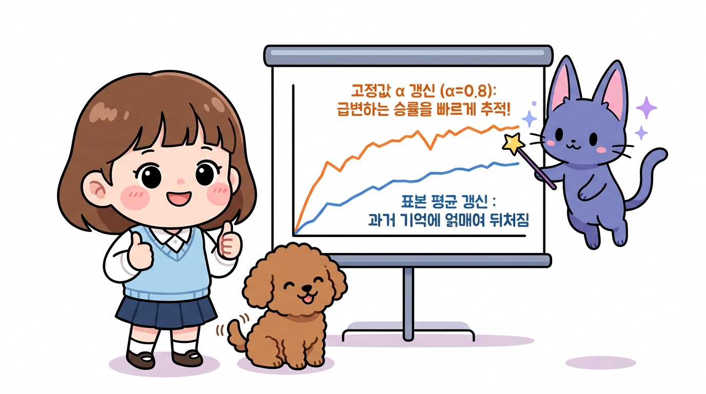
둘을 비교해보면 시간이 지날수록 고정값 α로 갱신할 때의 결과가 더 좋아짐을 알 수 있습니다. 한편, 표본 평균 방식은 처음에는 잘 작동하지만 시간이 지날수록 격차가 벌어집니다. 시간의 변화에 잘 대응하지 못하는 모습입니다.
이를 통해 이번 비정상 문제에서는 고정값 α로 갱신하는 방식이 적합하다는 사실을 알 수 있습니다.
🔍 표본 평균 vs 고정값 α 방식의 격차 원인 분석
| 에이전트 방식 | 비정상 환경에서의 동작 특징 | 문제점 및 성과 차이 |
|---|---|---|
| 표본 평균 에이전트 (Sample Average) | • 오래된 과거 보상과 최신 보상을 1/n로 동일하게 취급 • n이 커질수록 1/n이 너무 작아져 최신 보상이 들어와도 Q 가치 추정치가 거의 움직이지 않음 |
• 과거의 1등 머신 기억에 갇혀 새롭게 1등으로 부상한 머신을 인지하지 못함 (정체 및 성적 하락) |
| 고정값 α 에이전트 (AlphaAgent, α=0.8) | • 과거 보상은 (1 - α) 배율로 기하급수적 망각 • 최신 보상에 항상 80%의 높은 가중치 부여 |
• 머신의 승률이 출렁여도 실시간으로 새로운 1등 머신을 재빠르게 포착하고 갈아탐 (압도적 고승률 유지) |
3.5.4 정리 및 요약
이번 절에서는 환경 자체가 동적으로 움직이는 비정상 문제를 해결하는 방식을 배웠습니다.
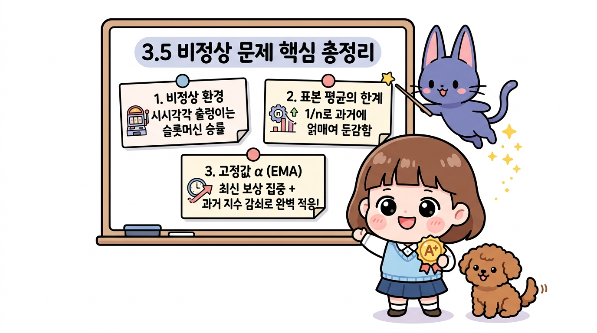
👧 도로시: “지니야! 정적인 세상에서는 과거의 모든 경험을 공평하게 모으는 ‘표본 평균’이 정답이지만, 끊임없이 변하는 비정상 세상에서는 ‘오래된 과거를 지우고 최신 트렌드에 집중하는 고정값 α’가 최고의 지혜라는 걸 배웠어!”
🐱 지니: “완벽해 도로시! 앞으로 우리가 탐험할 복잡한 강화학습 세상(MDP, Q-learning, 딥러닝)은 대부분 에이전트의 정책이 바뀌면서 환경의 피드백도 계속 변하는 ‘비정상적 특성’을 띤단다. 그래서 바로 이 고정 학습률 α 방식이 강화학습 전반의 표준 공식으로 쓰이게 되는 거지!”
🐶 토토: “멍멍! 와프! (비정상 문제도 완벽하게 정복했어요!)”
📝 핵심 요약
- 정상과 비정상 문제의 핵심 차이: 정상(Stationary) 문제에서는 슬롯머신의 승률(가치)이 고정적이지만, 비정상(Non-stationary) 문제에서는 매 시도마다 승률에 노이즈가 추가되어 최적의 기계가 수시로 바뀝니다.
- 표본 평균의 한계: 표본 평균 방식은 모든 과거 데이터에 1/n의 동일한 가중치를 부여합니다. 이는 과거의 슬롯머신 상태 정보가 최신 상태 정보와 똑같은 중요도로 다루어지기 때문에 동적인 비정상 환경에 기민하게 대처하지 못합니다.
- 고정 학습률 α와 지수 이동 평균(EMA): 가중치 1/n을 고정값 α로 치환한 공식(Qn = Qn-1 + α(Rn - Qn-1))을 사용하면, 최신 보상일수록 더 큰 가중치를 부여하고 과거의 데이터 가중치는 기하급수적으로 감쇠시키는 지수 이동 평균(Exponential Moving Average)을 유도할 수 있습니다.
- 초깃값 편향(Initial Bias): 지수 가중 갱신 방식은 첫 행동 이후에도 사용자가 설정한 초깃값 Q0의 잔재가 (1 - α)n Q0 만큼 남아 학습에 일부 편향을 남깁니다. 반면 표본 평균은 첫 보상을 받는 순간 초깃값 영향이 즉시 소멸합니다.
- 학습 성과 확인: 비정상 밴디트 시뮬레이션 결과, 고정값 α 방식(
alpha const update)이 시간이 흐름에 따라 변화하는 승률 환경에 기민하게 반응하여 표본 평균 방식(sample average)에 비해 장기적으로 월등히 높은 평균 승률 성과를 보여주었습니다.